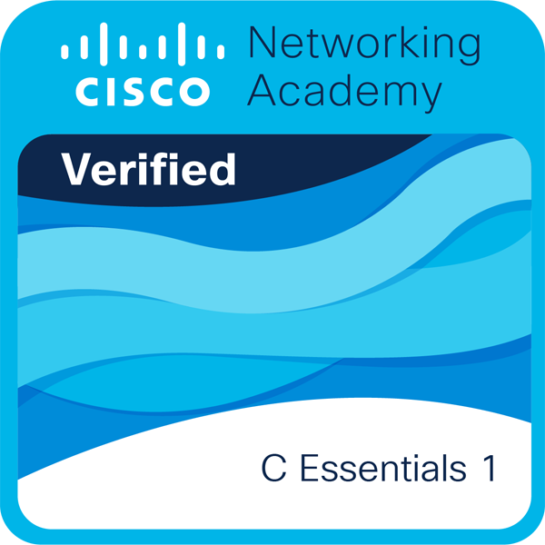
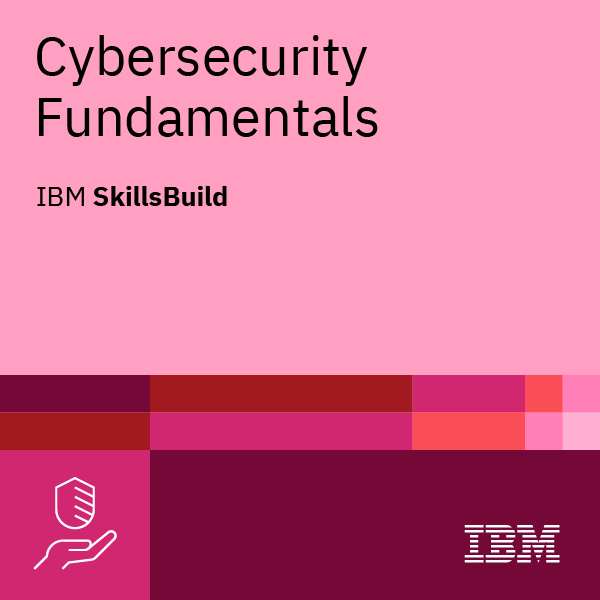
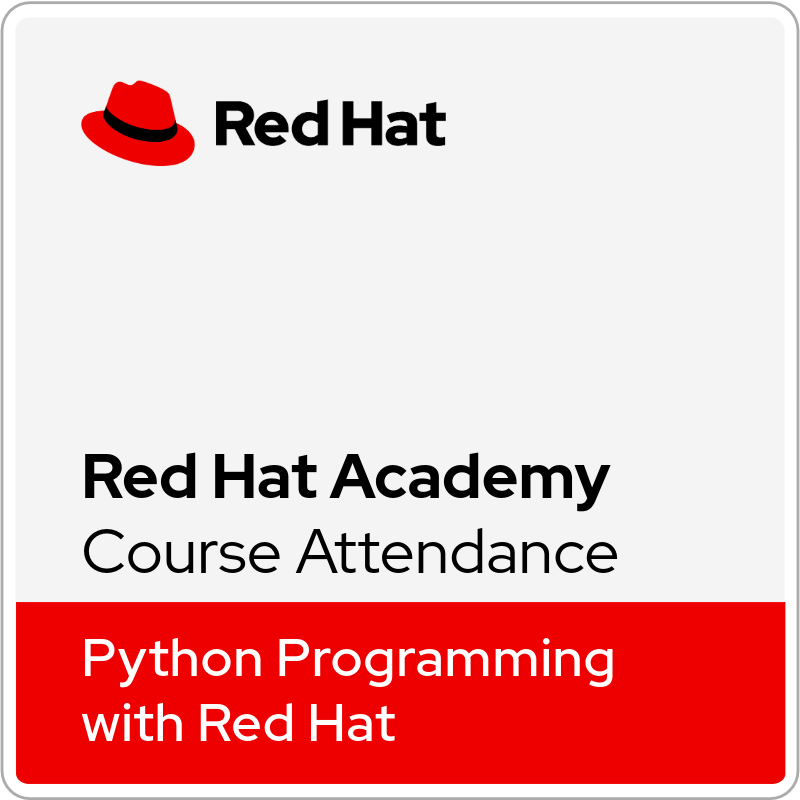
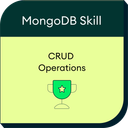

SQL (Advanced)
Advanced SQL skill certification.
A practical archive of credentials visible across public professional profiles and the existing portfolio certificate collection. Dates are shown where the public record provides them; items without a current public date are marked rather than guessed.
Advanced SQL skill certification.
Intermediate SQL skill certification.
Basic SQL skill certification.



Job simulation credential listed in the public professional profile.

Candidate credential; the public LinkedIn record shows an expiry in Aug 2026.

This certificate artwork is present in the existing portfolio archive. The current public LinkedIn crawl did not expose an issue date, so none is invented here.
This certificate artwork is present in the existing portfolio archive. The current public LinkedIn crawl did not expose an issue date.
Cybersecurity foundations credential shown in the existing public portfolio record.
Cybersecurity internship/training record shown in the existing public portfolio.
Shown as an achievement on the public GitHub profile. It is listed separately from the LinkedIn license-and-certification records above.